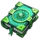
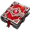
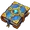
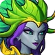

Dark gods are special bosses that can be battled in the Chaos Rift. There are three dark gods: Ledra, Yamanoth and Kramatak. When defeated, you can obtain their tomes of power, which can then be used in Forbidden Knowledge researches. Once all of their forbidden knowledge researches reach level 10, a dark god can be unlocked with 50 of their tomes of power and join your party.
Tomes of power
Each dark god has their individual tome of power:
| Tome of Power | Description |
|---|---|
 Tome of Power Ledra |
Used to research ocean secrets |
 Tome of Power Yamanoth |
Used to research chaos teachings |
 Tome of Power Kramatak |
Used to research thunder chronicles |
{kind=link}
{kind=link}
{kind=link}
List of dark gods
| Ledra (unlocks at ocean secrets 10) | |||||
|---|---|---|---|---|---|
 |

| ||||
| Yamanoth (unlocks at chaos teachings 10) | |||||
|---|---|---|---|---|---|

| |||||
| Kramatak (unlocks at thunder chronicles 10) | |||||
|---|---|---|---|---|---|
| Awakening Effect: Prestigious | |||||
{kind=link}